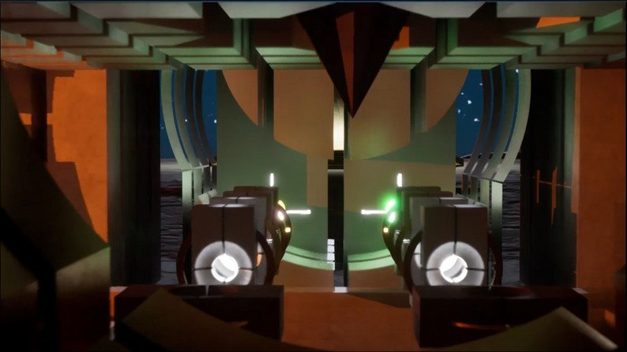
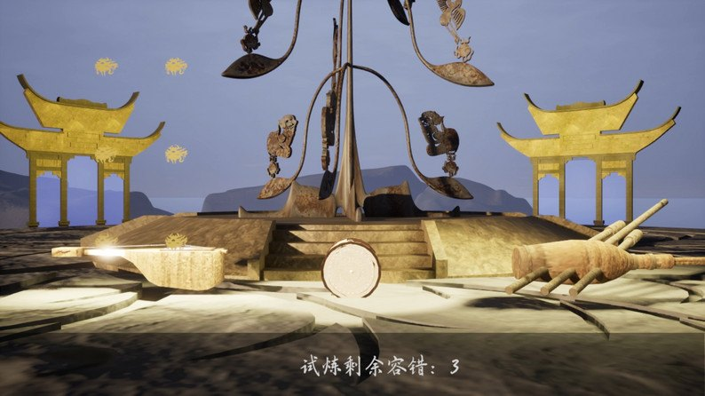
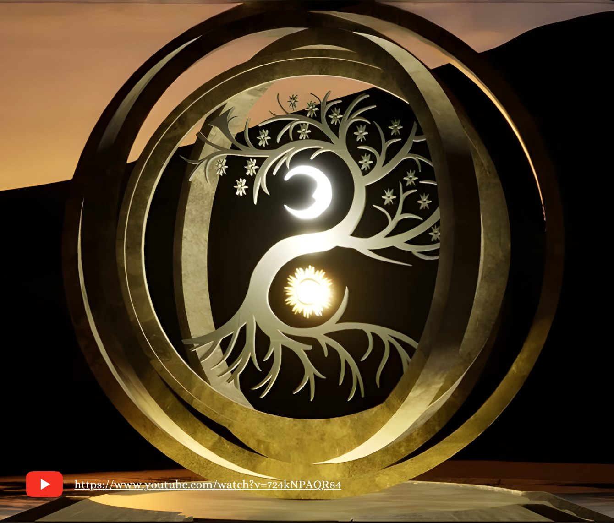

Technical art highlights
- Owned lighting, skybox and atmosphere across realms
- Rendering optimization: better visuals, smaller build
- Rhythm & puzzle systems in UE5 Blueprints
- Bridged art and engineering as producer on a 9-person team
01Overview
Rhythm: Echo of the Disciple is a first-person 3D rhythm and puzzle adventure made in two weeks for the Global Game Jam × WIPO "Next Great IP" Game Jam. You play the Silent One, the last echo of the World Tree Ruomu, travelling through nine forgotten realms to restore harmony after the Resonance Collapse silenced the world. You play sacred instruments to wake lost rhythms.
I was one of two producers, a developer and the team’s technical artist: I built core rhythm and puzzle systems in Unreal Blueprints and owned lighting, skybox and rendering performance, all while coordinating nine people across design, programming, art, audio and publishing.


02My contributions
Lighting & skybox
Lit the realms and built the skybox and atmosphere to carry each realm’s mood from dusk-lit desert to glowing tree chamber.
Rendering optimization
Optimized lighting and rendering settings to improve visual quality while reducing build size for distribution.
Rhythm & puzzle systems
Developed core rhythm and puzzle gameplay in UE5 Blueprints, delivering a 20-minute playable demo.
Production
Co-produced a 9-person team across design, programming, art, audio, writing and publishing inside a two-week cycle.
IP research
Researched successful game IP and worldbuilding strategies and helped plan a long-term IP built on ethnic-minority music.
03Challenges & solutions
Mood vs. performance on a jam timeline
We wanted atmospheric, mythic realms, but heavy lighting and assets meant a large build and uneven performance for players downloading from itch.io.
Targeted lighting & rendering optimization
I focused on lighting, skybox and rendering settings. The pass improved visual quality while reducing the final build size.
Nine people, two weeks
Design, programming, art, audio, writing and publishing all had to converge on one playable build.
Producer-led scope and cadence
Coordinated development across disciplines and kept scope anchored to a 20-minute demo so everything shipped inside the two-week cycle.
04Key art

Full credits: Producers Yolanda Liu & Kyrene Zhang · Developers Oley Zhou, Kyrene Zhang, Yolanda Liu · Audio Katria Qin · Writer Bill Dong · Artists Aldo Kai, Cecilia Han, Bi Hongying · Publishing Haley Wang.